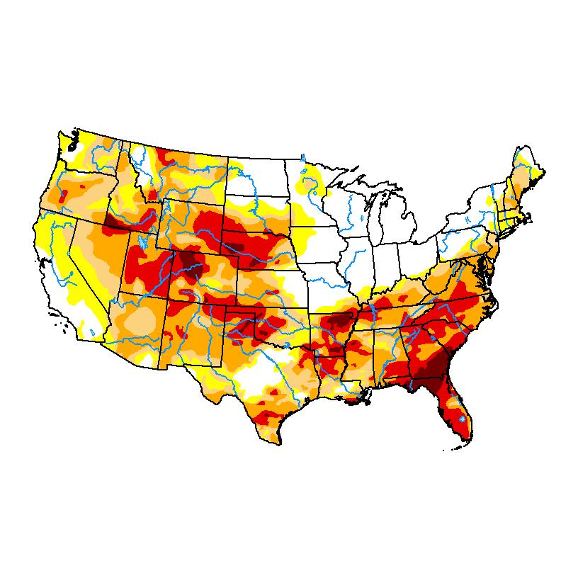
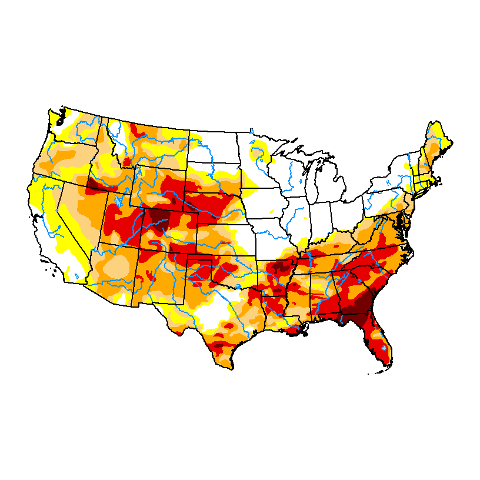
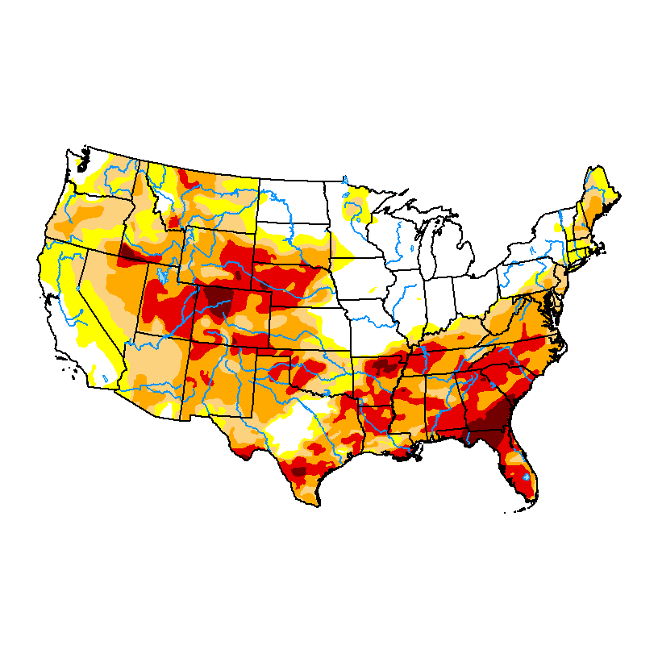

Map Archive
Browse historical U.S. Drought Monitor maps. The full archive goes back to January 4, 2000. Below are the four most recent weeks displayed in this clone — use the date picker to jump to any week in the archive.
Year
Month
Area

May 19, 2026
Released the Thursday following data cutoff.
View full size →
May 12, 2026
Released the Thursday following data cutoff.
View full size →
May 5, 2026
Released the Thursday following data cutoff.
View full size →
April 28, 2026
Released the Thursday following data cutoff.
View full size →
Looking for a map from before January 2000? The USDM record begins on January 4, 2000.
For earlier drought conditions, see the NOAA NCEI historical Palmer Drought Severity Index archive.